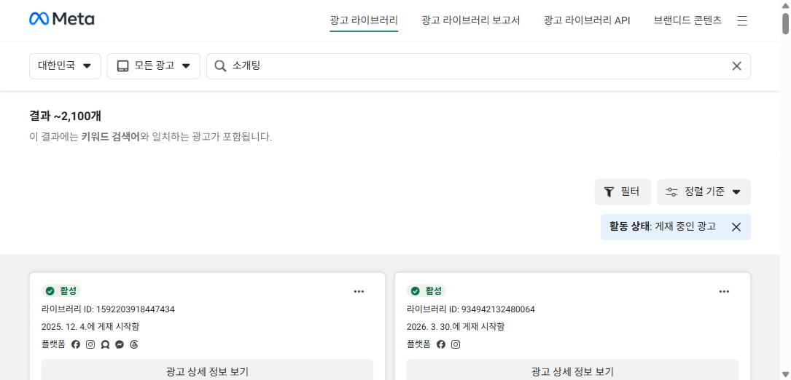

♥WIPPY
경쟁전략 & 비즈니스 모델 제안 · Performance Marketing
낯선 사람과 1:1로 사랑을 찾던 시대는 지나가고,
위피, 이제 '만남의 장'으로
직접 써본 퍼포먼스 마케터의 관점에서 — 2030이 인연을 만드는 방식의 변화를 짚고,
문토식 '취향 기반 만남의 장'으로 위피의 새로운 매출 판로를 제안합니다.
엔라이즈 · 위피(WIPPY)
퍼포먼스 마케터 지원
이도형
먼저, 위피는 어떤 앱일까요
"동네 친구가 필요할 때" —
위치 기반 소셜 디스커버리
♥WIPPY
- 무엇 — 엔라이즈의 위치(반경) 기반 만남 앱 (2017 출시) · 국내 데이팅 부문 매출 6년 연속 1위
- 방식 — 주변 사람 추천 → 대화 신청 → 상호 수락 시 채팅. 핵심 상호작용은 인앱 재화 '젤리'로 과금
- 지금 — '플레이스·동네 모임' 기능으로 이미 커뮤니티로 확장 중 (← 이 방향을 가속하자는 게 제안)
"내가 찾던 동네친구 위피에서 만나세요!" — 핑크·퍼플 톤
시장 신호 ① · 왜 지금 전략이 필요한가
데이팅 앱, 전 세계에서 식고 있습니다
♥WIPPY
-8%
Tinder 유료 가입자
(YoY, 2025 Q4)
-9.9%
Bumble 연매출
(유료 -20.5%)
한국 2030의 이탈
데이팅 앱 경험자 83.3%가 "더는 쓰지 않는다". 이탈 1위 이유는 '가벼운 만남 위주'(33.5%). 다운로드는 늘어도 결제는 줄어드는 구조.
신뢰의 위기
공정위, 일부 운영사가 270여 개 가짜 여성계정으로 결제 유도 → 과징금. 봇·스캠으로 카테고리 전체 신뢰가 흔들립니다.
시장 신호 ② · 위피 사용자 목소리
'현재 방향 고수'는 임팩트가 약합니다
♥WIPPY
3.3/5
Google Play (약 3.5만)
매출은 1위인데, 안드로이드 평점 3.3. 인스톨을 늘려도 신뢰·만족이 못 따라오면 LTV·리텐션이 샙니다 — 퍼포먼스가 풀어야 할 진짜 문제.
반복되는 불만
- 과금 압박 — "채팅 시작에도 젤리 소모…현질 유도 심하다" (운영사도 구조 인정)
- 가짜·봇·업체 계정, 로맨스 스캠 피해
- 매칭 품질·사진/실물 불일치, 부당 정지 불만
긍정 리뷰는 "매칭률은 제일 높다"(위치 기반 즉시성). 강점은 분명하지만, '젤리로 1:1 채팅을 여는' 구조 자체가 불만의 핵심입니다.
인사이트 ① · 2030이 인연을 만드는 데 겪는 불편
'사랑을 전제로 한 만남'이 부담스럽습니다
♥WIPPY
페인 ①
인위적·어색한 만남
아무 맥락 없이 1:1로 마주 앉는 만남은 어색하고 부담. 대화 소재부터 막힘.
페인 ②
'연애 전제'의 압박
처음부터 "연애하려고 만난다"는 프레임이 평가·부담을 만들고 진입을 막음.
페인 ③
외모·사진 중심
프로필 사진 위주의 첫인상 판단. 보정 불신, 성격·취향은 뒤로 밀려 미스매치.
페인 ④
안전·신뢰 불안
봇·가짜·스캠 걱정. "이 사람 진짜일까?"가 만남의 첫 장벽.
한 줄 요약 — 문제는 '만남'이 아니라, 맥락 없이·연애를 전제로·사진으로 만나게 하는 방식입니다.
인사이트 ② · 만남의 무게중심이 옮겨갔다
2030은 이제 '취미·모임'에서 만납니다
♥WIPPY
관심사 ＞ 데이팅
관심사 커뮤니티 월 이용자 수가 데이팅 서비스를 추월 (인크로스, 2024-06)
40.5%
2030이 정기 모임 보유 · 연애상대와 취미 공유 중요 91.3%
- "자만추" — 자연스러운 만남을 선호. 20대 초 55%가 "대면 만남을 앱보다 더 신뢰" (보정 프로필 불신)
- 러닝크루·와인·독서모임이 새로운 만남의 채널로. Strava 런클럽에서 데이트하는 Gen Z
핵심 통찰 — 사랑은 더 이상 '전제'가 아니라, 좋아하는 걸 함께하다 생기는 '결과'입니다.
문토 — '취향 인연'·소셜 파티 등 취향 모임 안에서 자연스러운 인연
방향 · 데이팅 앱은 어떻게 진화해야 하나
'매칭'에서 '취향 기반 만남의 장'으로
♥WIPPY
① 취향 우선 진입 (연애 전제 제거)
"연애하러" 대신 "좋아하는 걸 같이"로 시작 → 부담·번아웃 회피. 벤치마크 · 문토 소셜링, Strava 런클럽
② 큐레이션된 소규모 그룹 만남
낯선 1:1 추천 대신 관심사 기반 소그룹(6인 디너 등). 벤치마크 · Timeleft(52개국 월 15만 식사)
③ 친구·커뮤니티 레인 신설
데이팅 밖 '친구·동네' 관계로 TAM 확장 → 진입 거부감↓. 벤치마크 · Bumble for Friends
④ 온라인 → 오프라인 IRL 이벤트
실제 만남의 장(밋업·클래스)에 투자해 외로움을 해결. 벤치마크 · Hinge 'One More Hour'
위피는 이미 '동네친구·플레이스'로 이 방향에 발을 들였습니다 — 문토식 '만남의 장'으로 가속하면 됩니다.
지향점 · 문토에서 배우는 것
'사랑을 전제하지 않는 만남의 장'을 위피에
♥WIPPY
🎯 지향 · 연애를 강요하지 않고, 취향으로 모여 자연스럽게 인연이 되게 한다
문토는 이렇게
모임이 먼저, 인연은 결과
- 소셜링·클럽·챌린지로 취향 모임 운영
- '연애' 간판은 없지만 와인·취향 인연 모임에서 자연스럽게 만남
근거
사람들이 더 편해한다
- 공통 관심사가 먼저 검증돼 신뢰·대화가 쉬움
- 호스트 운영 후기·실명으로 봇·스캠 불안↓
문토는 호스트 참가비의 20%를 수수료로 가져갑니다(호스트 80%, 상위 호스트 연 9,500만 사례). 모임 자체가 신뢰·리텐션·매출을 동시에 만듭니다.
문토
취향 모임 → '취향 인연'으로 — 위피가 차용할 정확한 공식
기대 효과 · 만남의 장이 만드는 증분
진입장벽을 낮추면, 매출까지 이어집니다
♥WIPPY
새 유저층 유입
'연애는 부담스럽지만 친구·취미는 좋다'는 이탈·관망층을 끌어옴 → 신규·복귀.
신뢰·평점 회복
관심사·후기로 만나니 봇·과금 불만이 줄고 만족도·평점이 오를 여지.
젤리 너머의 매출
단발 젤리 소모에 더해 모임 참가비·구독·수수료라는 반복 매출축 확보.
위피 개선 (1/2) · 제품
'젤리로 여는 1:1'에서 '취향으로 모이는 장'으로
♥WIPPY
🎯 지향 · 1:1 매칭 옆에 '취향 모임(만남의 장)' 레인을 새로 연다
대화하려면 채팅방 열기 · 🟡 젤리 7개
근처 OOO · 4.1km
프로필 열람 · 🟡 2개
맥락 없는 1:1 · 과금이 첫 장벽
→
🍷 금요일 와인 소셜링 (6인)
강남 · 호스트 인증 · 3자리 남음
🏃 한강 러닝 모임
잠실 · 매주 토 · 후기 4.9
핵심 변화 3가지
- '모임' 탭 신설 — 취향 소셜링·클럽·번개를 위치 기반으로 추천
- 연애 전제 제거 — 친구·취미로 시작, 인연은 결과로
- 호스트·후기·인증 — 봇·스캠 불안을 신뢰로 전환
위피 개선 (2/2) · BM · 새 매출 판로
'젤리 한 축'에서 '여러 매출 판로'로
♥WIPPY
AS-IS · 지금
매출이 '젤리' 종량제(채팅·열람마다 과금) 한 축 — 과금 압박이 평점·신뢰를 끌어내림.
→
TO-BE · 제안
모임 참가비·호스트 수수료·멤버십·티켓·제휴 — 만남의 장 위에 반복 매출축을 얹는다.
| 새 매출 판로 | 메커니즘 | 벤치마크 |
|---|
| 모임 참가비 + 수수료 | 호스트가 유료 모임 운영, 위피가 take-rate 후 정산 | 문토 20% · 프립 9.9% |
| 호스트(모임장) 수익배분 | 인기 호스트가 공급을 만들고 수익 공유 → 모임 풀 확장 | 문토(상위 호스트 연 9,500만) |
| 프리미엄 멤버십(구독) | 무제한 모임 참여·우선 매칭·필터를 월 구독으로 | Timeleft·Strava·트레바리 |
| 오프라인 이벤트 티켓 | 대형 밋업·클래스 유료 티켓 + 플랫폼 take-rate | Eventbrite(9.6%) |
| 브랜드 제휴·커머스 | 주류·F&B·러닝 브랜드 스폰서 모임, 굿즈·예약 연동 | Timeleft×브랜드 협업 |
퍼포먼스 전략 · 새 BM을 어떻게 키우나
모임 BM은 '입찰 경쟁'이 아니라
'구조'로 키웁니다
♥WIPPY
🎯 지향 · 비싼 인스톨 경쟁이 아니라 — LTV 코호트·지역 밀도·바이럴로 모임 매출을 키운다
왜 '구조'인가
데이팅 CPI가 2년 새 +89%(약 $1.46→$2.76)로 올랐습니다. 같은 환경에서 범블은 퍼포먼스 마케팅 비중을 25.7%→12.7%로 줄이고 저의도 유저를 걸러 순이익 +165%를 냈습니다 — 무분별 입찰이 아니라 코호트·구조가 이깁니다.
| 퍼포먼스 레버 | 전술 (마케터가 직접 소유) | 근거·벤치마크 | 퍼널 |
|---|
| ① LTV 코호트 UA | 가치기반 입찰(VBB)로 '90일 뒤에도 결제할 유저'에 집중 | 범블 순이익 +165% | 활성·수익 |
| ② 지역 밀도 런칭 | 동네별 가입 임계치 도달 후 모임 오픈(+잔여석 FOMO)·당근 지역 타겟 | Timeleft 151명·당근 위치 | 획득 |
| ③ UGC 후기 소재 | 모임 후기·"혼자 와도 OK"·매진임박을 광고 크리에이티브로 | TikTok hook rate 33% | 획득 |
| ④ 내장 바이럴 루프 | 친구 초대 크레딧(그룹=다인 초대)·호스트를 공급 성장엔진으로 | 소모임 모임장 구독·K-factor | 재확산 |
| ⑤ 유료전환·리타게팅 | free→유료모임→멤버십, 비결제자 리타게팅·결제신호를 비딩에 피드백 | 데이팅 ARPU $9.18(최상위) | 수익·LTV |
경쟁사 벤치마크 · 그들은 이렇게 한다
경쟁은 이미 '다르게' 싸우고 있습니다
♥WIPPY
Meta 광고 라이브러리
'소개팅' 키워드 활성 광고 약 2,100개 — 경쟁은 Meta·IG에 대량 집행 중. 관찰된 앵글: "사진 말고 가치관·취향부터 보는 소개팅"
- 문토 — 누구나 호스트·수수료 20%·챌린지 인증으로 공급(호스트)이 성장을 만든다
- Timeleft — 도시당 151명 임계치 후 오픈, "하루 한 도시, 오직 광고로" 디지털 온리
- 범블 — 퍼포먼스 마케팅 비중 축소(25.7%→12.7%)·저의도 유저 제거 → 순이익 +165%
- 스트라바 — 클럽이 오가닉 바이럴 엔진(활동 공유 자체가 무료 마케팅)
- 소모임 — 모임장 유료 구독 → 모임장이 회원을 데려오는 양면 성장
패턴은 분명합니다 — 비싼 입찰 경쟁(레드오션)이 아니라, 코호트 품질·지역 밀도·호스트/바이럴 구조로 이깁니다. 위피의 모임 BM이 노릴 자리.
실행 · Roadmap & KPI
작게 검증하며, 신뢰를 매출로
♥WIPPY
0–4주 · 검증
모임 베타
- '모임' 탭 MVP(소수 지역·관심사)
- 시드 호스트 모집·후기 시스템
- 연애 전제 없는 카피 A/B
1–3개월 · 확산
참가비·수수료
- 유료 모임 + take-rate 도입
- 호스트 수익배분 인센티브
- 모임→매칭 전환 퍼널 설계
분기 · 매출 판로
멤버십·제휴
- 프리미엄 멤버십 구독
- 오프라인 이벤트 티켓
- 브랜드 제휴·커머스
핵심 KPI
모임 참여율 · 모임→채팅/매칭 전환율 · D30 리텐션(모임 참여자 vs 미참여) · 유료 모임 attach·ARPU · 평점/신고율. 한 지표만 꼽으면 '모임 참여 → 인연 전환율'.
♥WIPPY
'내 짝꿍'을 만나기까지의 마찰을,
없애고 싶습니다
사진을 꾸미고, 젤리를 결제하고, 어색한 1:1에 마주 앉는 일 —
누군가에겐 짝꿍을 만나는 길이 여전히 부담스럽고 불안합니다.
저는 좋아하는 걸 함께하다 자연스럽게 인연이 되는 '만남의 장'으로 위피를 만들어,
사랑을 찾는 길을 더 쉽고, 더 건강하게 바꾸는 데 일조하고 싶습니다.
직접 써보고, 데이터로 증명하겠습니다. 감사합니다.
이도형 · Performance Marketer
엔라이즈 · 위피